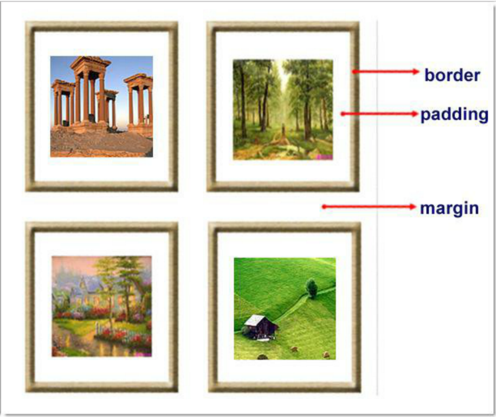
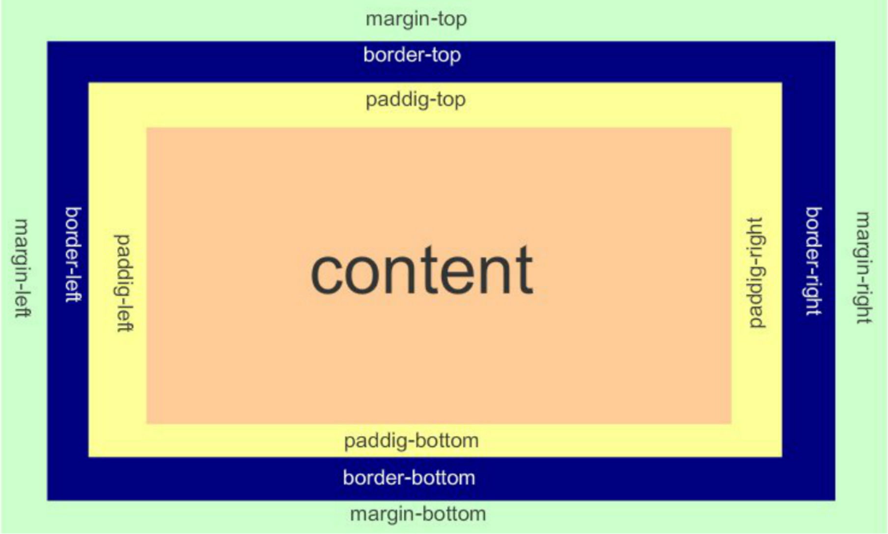

原文连接:https://www.cnblogs.com/bind/p/11566718.html
一、HTML
标签:
- 由一对尖括号包裹的单词构成
- 标签不区分大小写
- 标签分为两部分: 开始标签<a> 和 结束标签</a>. 两个标签之间的部分 我们叫做标签体.
- 自闭和标签.例如: <br/> <hr/> <input /> <img />
- 标签可以嵌套.但是不能交叉嵌套. <a><b></a></b>
标签的属性:
- 以键值对形式出现的. 例如 name="alex"
- 只能出现在开始标签 或 自闭和标签中.
- 属性名字全部小写. *属性值必须使用双引号或单引号包裹 例如 name="alex"
- 如果属性值和属性名完全一样.直接写属性名即可. 例如 readonly
<!DOCTYPE html>标签:W3C的解析渲染页面标准
head标签:
<meta>
- name属性主要用于描述网页
- http-equiv，相当于http的文件头作用，它可以向浏览器传回一些有用的信息，以帮助正确和精确地显示网页内容，


body标签:
块级标签：<p><h1><table><ol><ul><form><div>
内联标签：<a><input><img><sub><sup><textarea><span>
block（块）元素：
-
总是在新行上开始；
-
宽度缺省是它的容器的100%，除非设定一个宽度；
-
它可以容纳内联元素和其他块元素。
inline元素：
- 和其他元素都在一行上；
- 宽度就是它的文字或图片的宽度，不可改变
- 内联元素只能容纳文本或者其他内联元素
特殊字符
< >；"；©®
图形标签：
- src: 要显示图片的路径.
- alt: 图片没有加载成功时的提示.
- title: 鼠标悬浮时的提示信息.
- width: 图片的宽
- height:图片的高 (宽高两个属性只用一个会自动等比缩放.)
超链接标签<a>：
列表标签:
- <ul>: 无序列表
- <ol>: 有序列表 <li>:列表中的每一项.
- <dl> 定义列表 <dt> 列表标题 <dd> 列表项
表格标签
<table>
五 表格标签: <table>
border: 表格边框.
cellpadding: 内边距
cellspacing: 外边距.
width: 像素 百分比.（最好通过css来设置长宽）
<tr>: table row
<th>: table head cell
<td>: table data cell
rowspan: 单元格竖跨多少行
colspan: 单元格横跨多少列（即合并单元格）
<th>: table header <tbody>(不常用): 为表格进行分区.六 表单标签<form>
表单用于向服务器传输数据。
表单能够包含 input 元素，比如文本字段、复选框、单选框、提交按钮等等。
表单还可以包含textarea、select、fieldset和 label 元素。
1.表单属性
HTML 表单用于接收不同类型的用户输入，用户提交表单时向服务器传输数据，从而实现用户与Web服务器的交互。表单标签, 要提交的所有内容都应该在该标签中.
action: 表单提交到哪. 一般指向服务器端一个程序,程序接收到表单提交过来的数据（即表单元素值）作相应处理，比如https://www.sogou.com/web
method: 表单的提交方式 post/get 默认取值 就是 get（信封）
get: 1.提交的键值对.放在地址栏中url后面. 2.安全性相对较差. 3.对提交内容的长度有限制.
post:1.提交的键值对 不在地址栏. 2.安全性相对较高. 3.对提交内容的长度理论上无限制.
get/post是常见的两种请求方式.
2.表单元素
<input> 标签的属性和对应值
type: text 文本输入框
password 密码输入框
radio 单选框
checkbox 多选框
submit 提交按钮
button 按钮(需要配合js使用.) button和submit的区别？
file 提交文件：form表单需要加上属性enctype="multipart/form-data"
name: 表单提交项的键.注意和id属性的区别：name属性是和服务器通信时使用的名称；而id属性是浏览器端使用的名称，该属性主要是为了方便客
户端编程，而在css和javascript中使用的
value: 表单提交项的值.对于不同的输入类型，value 属性的用法也不同：
?12345type="button", "reset", "submit" - 定义按钮上的显示的文本 type="text", "password", "hidden" - 定义输入字段的初始值 type="checkbox", "radio", "image" - 定义与输入相关联的值
checked: radio 和 checkbox 默认被选中
readonly: 只读. text 和 password
disabled: 对所用input都好使.<select> 下拉选标签属性
<textarea> 文本域
name: 表单提交项的键.
cols: 文本域默认有多少列
rows: 文本域默认有多少行<label>
<label for="www">姓名</label>
<input id="www" type="text">
<fieldset>
<fieldset>
<legend>登录</legend>
<input type="text">
</fieldset>
二、CSS
CSS是Cascading Style Sheets的简称，中文称为层叠样式表，用来控制网页数据的表现，可以使网页的表现与数据内容分离。
引入方式:
1.行内式
<p style="background-color: rebeccapurple">hello yuan</p>2.嵌入式
<head>
<meta charset="UTF-8">
<title>Title</title>
<style>
p{
background-color: #2b99ff;
}
</style>
</head>3 链接式
<link href="mystyle.css" rel="stylesheet" type="text/css"/>4.导入式
<style type="text/css">
@import"mystyle.css"; 此处要注意.css文件的路径
</style>css的选择器:
＊ ： 通用元素选择器，匹配任何元素 * { margin:0; padding:0; }
E ： 标签选择器，匹配所有使用E标签的元素 p { color:green; }
.info和E.info: class选择器，匹配所有class属性中包含info的元素 .info { background:#ff0; } p.info { background:blue; }
#info和E#info id选择器，匹配所有id属性等于footer的元素 #info { background:#ff0; } p#info { background:#ff0; }E,F 多元素选择器，同时匹配所有E元素或F元素，E和F之间用逗号分隔 div,p { color:#f00; }
E F 后代元素选择器，匹配所有属于E元素后代的F元素，E和F之间用空格分隔 li a { font-weight:bold;
E > F 子元素选择器，匹配所有E元素的子元素F div > p { color:#f00; }
E + F 毗邻元素选择器，匹配所有紧随E元素之后的同级元素F div + p { color:#f00; }嵌套规则：
- 块级元素可以包含内联元素或某些块级元素，但内联元素不能包含块级元素，它只能包含其它内联元素。
- 有几个特殊的块级元素只能包含内联元素，不能包含块级元素。如h1,h2,h3,h4,h5,h6,p,dt
- li内可以包含div
- 块级元素与块级元素并列、内联元素与内联元素并列
-
属性选择器
E[att] 匹配所有具有att属性的E元素，不考虑它的值。（注意：E在此处可以省略，比如“[cheacked]”。以下同。） p[title] { color:#f00; } E[att=val] 匹配所有att属性等于“val”的E元素 div[class=”error”] { color:#f00; } E[att~=val] 匹配所有att属性具有多个空格分隔的值、其中一个值等于“val”的E元素 td[class~=”name”] { color:#f00; } E[attr^=val] 匹配属性值以指定值开头的每个元素 div[class^="test"]{background:#ffff00;} E[attr$=val] 匹配属性值以指定值结尾的每个元素 div[class$="test"]{background:#ffff00;} E[attr*=val] 匹配属性值中包含指定值的每个元素 div[class*="test"]{background:#ffff00;}伪类(Pseudo-classes)
CSS伪类是用来给选择器添加一些特殊效果。
a:link（没有接触过的链接）,用于定义了链接的常规状态。 a:hover（鼠标放在链接上的状态）,用于产生视觉效果。 a:visited（访问过的链接）,用于阅读文章，能清楚的判断已经访问过的链接。 a:active（在链接上按下鼠标时的状态）,用于表现鼠标按下时的链接状态。 伪类选择器 : 伪类指的是标签的不同状态: a ==> 点过状态 没有点过的状态 鼠标悬浮状态 激活状态 a:link {color: #FF0000} /* 未访问的链接 */ a:visited {color: #00FF00} /* 已访问的链接 */ a:hover {color: #FF00FF} /* 鼠标移动到链接上 */ a:active {color: #0000FF} /* 选定的链接 */ 格式: 标签:伪类名称{ css代码; }
:before p:before 在每个<p>元素之前插入内容
:after p:after 在每个<p>元素之后插入内容
p:before 在每个 <p> 元素的内容之前插入内容
p:before{content:"hello";color:red}
p:after 在每个 <p> 元素的内容之前插入内容
p:after{ content:"hello"；color:red}
css优先级和继承:
CSS优先级，是指CSS样式在浏览器中被解析的先后顺序。
样式表中的特殊性描述了不同规则的相对权重，它的基本规则是：
1 内联样式表的权值最高 style=""-------------------1000；2 统计选择符中的ID属性个数。 #id －－－－－－－－－－－－－100
3 统计选择符中的CLASS属性个数。 .class －－－－－－－－－－－－－10
4 统计选择符中的HTML标签名个数。 p－－－－－－－－－－－－－-1继承是CSS的一个主要特征，它是依赖于祖先-后代的关系的。继承是一种机制，它允许样式不仅可以应用于某个特定的元素，还可以应用于它的后代.
有一些属性不能被继承，如：border, margin, padding, background等。
常用属性:
<div style="color:blueviolet">ppppp</div>
font-size: 20px/50%/larger
font-family:'Lucida Bright'
font-weight: lighter/bold/border/
<h1 style="font-style: oblique">sb</h1>
background-color: cornflowerblue
background-image: url('1.jpg');
background-repeat: no-repeat;(repeat:平铺满)
background-position: right top（20px 20px）;(横向：left center right)(纵向：top center bottom)
简写：<body style="background: 20px 20px no-repeat #ff4 url('1.jpg')">
<div style="width: 300px;height: 300px;background: 20px 20px no-repeat #ff4 url('1.jpg')">如果将背景属性加在body上，要给body加上一个height，否则结果异常，这是因为body为空，无法撑起背景图片；
外边距和内边:


- margin: 用于控制元素与元素之间的距离；margin的最基本用途就是控制元素周围空间的间隔，从视觉角度上达到相互隔开的目的。
- padding: 用于控制内容与边框之间的距离；
- Border(边框) 围绕在内边距和内容外的边框。
- Content(内容) 盒子的内容，显示文本和图像。
-
float属性:
- block元素通常被现实为独立的一块，独占一行，多个block元素会各自新起一行，默认block元素宽度自动填满其父元素宽度。block元素可以设置width、height、margin、padding属性；
- inline元素不会独占一行，多个相邻的行内元素会排列在同一行里，直到一行排列不下，才会新换一行，其宽度随元素的内容而变化。inline元素设置width、height属性无效。
-
- 常见的块级元素有 div、form、table、p、pre、h1～h5、dl、ol、ul 等。
- 常见的内联元素有span、a、strong、em、label、input、select、textarea、img、br等
-
文档流，指的是元素排版布局过程中，元素会自动从左往右，从上往下的流式排列。
脱离文档流，也就是将元素从普通的布局排版中拿走，其他盒子在定位的时候，会当做脱离文档流的元素不存在而进行定位。
只有绝对定位absolute和浮动float才会脱离文档流。
- float脱离文档流时，其他盒子会无视这个元素，但其他盒子内的文本依然会为这个元素让出位置，环绕在周围(可以说是部分无视)。
- absolute position脱离文档流的元素，其他盒子与其他盒子内的文本都会无视它。(可以说是完全无视)
-
浮动的表现
定义：浮动的框可以向左或向右移动，直到它的外边缘碰到包含框或另一个浮动框的边框为止。由于浮动框不在文档的普通流中，所以文档的普通流中的浮动框之后的块框表现得就像浮动框不存在一样。（注意这里是块框而不是内联元素；浮动框只对它后面的元素造成影响）
注意 float被设计的时候就是用来完成文本环绕的效果，所以文本不会被挡住，这是float的特性，即float是一种不彻底的脱离文档流方式。无论多么复杂的布局，其基本出发点均是：“如何在一行显示多个div元素”。
清除浮动：
在非IE浏览器（如Firefox）下，当容器的高度为auto，且容器的内容中有浮动（float为left或right）的元素，在这种情况下，容器的高度不能自动伸长以适应内容的高度，使得内容溢出到容器外面而影响（甚至破坏）布局的现象。这个现象叫浮动溢出，为了防止这个现象的出现而进行的CSS处理，就叫CSS清除浮动。
clear语法： clear : none | left | right | both 取值： none : 默认值。允许两边都可以有浮动对象 left : 不允许左边有浮动对象 right : 不允许右边有浮动对象 both : 不允许有浮动对象 但是需要注意的是：clear属性只会对自身起作用，而不会影响其他元素。如果一个元素的右侧有一浮动对象，而这个元素设置了不允许右边有浮动对象，即clear：right，则这个元素会自动下移一格，达到本元素右边没有浮动对象的目的。position(定位):
1 static 默认值，无定位，不能当作绝对定位的参照物，并且设置标签对象的left、top等值是不起作用的的。
2 position: relative／absolute
relative 相对定位。相对定位是相对于该元素在文档流中的原始位置，即以自己原始位置为参照物。有趣的是，即使设定了元素的相对定位以及偏移值，元素还占有着原来的位置，即占据文档流空间。对象遵循正常文档流，但将依据top，right，bottom，left等属性在正常文档流中偏移位置。而其层叠通过z-index属性定义。
注意：position：relative的一个主要用法：方便绝对定位元素找到参照物。
absolute 绝对定位。
定义：设置为绝对定位的元素框从文档流完全删除，并相对于最近的已定位祖先元素定位，如果元素没有已定位的祖先元素，那么它的位置相对于最初的包含块（即body元素）。元素原先在正常文档流中所占的空间会关闭，就好像该元素原来不存在一样。元素定位后生成一个块级框，而不论原来它在正常流中生成何种类型的框。
重点：如果父级设置了position属性，例如position:relative;，那么子元素就会以父级的左上角为原始点进行定位。这样能很好的解决自适应网站的标签偏离问题，即父级为自适应的，那我子元素就设置position:absolute;父元素设置position:relative;，然后Top、Right、Bottom、Left用百分比宽度表示。
对象脱离正常文档流，使用top，right，bottom，left等属性进行绝对定位。而其层叠通过z-index属性定义。
总结：参照物用相对定位，子元素用绝对定位，并且保证相对定位参照物不会偏移即可。
position:fixed
fixed：对象脱离正常文档流，使用top，right，bottom，left等属性以窗口为参考点进行定位，当出现滚动条时，对象不会随着滚动。
注意点： 一个元素若设置了 position:absolute | fixed; 则该元素就不能设置float。一个是浮动流，另一个是“定位流”。但是 relative 却可以。因为它原本所占的空间仍然占据文档流。
在理论上，被设置为fixed的元素会被定位于浏览器窗口的一个指定坐标，不论窗口是否滚动，它都会固定在这个位置。
仅使用margin属性布局绝对定位元素:
margin-bottom 和margin-right的值不再对文档流中的元素产生影响，因为该元素已经脱离了文档流。另外，不管它的祖先元素有没有定位，都是以文档流中原来所在的位置上偏移参照物。
三、JavaScript
JavaScript 实现是由以下 3 个不同部分组成的：
- 核心（ECMAScript）
-
ECMAScript 标准描述了以下内容：
语法、类型 、语句 、关键字 、保留字 、运算符 、对象 (封装 继承 多态) 基于对象的语言.使用对象。
- 文档对象模型（DOM） Document object model (整合js，css，html)
- 浏览器对象模型（BOM） Broswer object model（整合js和浏览器）
- Javascript 在开发中绝大多数情况是基于对象的.也是面向对象的.
-
Undefined 类型 Undefined 类型只有一个值，即 undefined。当声明的变量未初始化时，该变量的默认值是 undefined。 当函数无明确返回值时，返回的也是值 "undefined"; Null 类型 另一种只有一个值的类型是 Null，它只有一个专用值 null，即它的字面量。值 undefined 实际上是从值 null 派生来的，因此 ECMAScript 把它们定义为相等的。 尽管这两个值相等，但它们的含义不同。undefined 是声明了变量但未对其初始化时赋予该变量的值，null 则用于表示尚未存在的对象（在讨论 typeof 运算符时，简单地介绍过这一点）。如果函数或方法要返回的是对象，那么找不到该对象时，返回的通常是 null。 var person=new Person() var person=nullJavaScript属于松散类型的程序语言 变量在声明的时候并不需要指定数据类型 变量只有在赋值的时候才会确定数据类型 表达式中包含不同类型数据则在计算过程中会强制进行类别转换 数字 + 字符串：数字转换为字符串 数字 + 布尔值：true转换为1，false转换为0 字符串 + 布尔值：布尔值转换为字符串true或false逻辑 AND 运算符(&&) 逻辑 AND 运算的运算数可以是任何类型的，不止是 Boolean 值。 如果某个运算数不是原始的 Boolean 型值，逻辑 AND 运算并不一定返回 Boolean 值： 如果某个运算数是 null，返回 null。 如果某个运算数是 NaN，返回 NaN。 如果某个运算数是 undefined，返回undefined。 逻辑 OR 运算符(||) 与逻辑 AND 运算符相似，如果某个运算数不是 Boolean 值，逻辑 OR 运算并不一定返回 Boolean 值异常处理 try { //这段代码从上往下运行，其中任何一个语句抛出异常该代码块就结束运行 } catch (e) { // 如果try代码块中抛出了异常，catch代码块中的代码就会被执行。 //e是一个局部变量，用来指向Error对象或者其他抛出的对象 } finally { //无论try中代码是否有异常抛出（甚至是try代码块中有return语句），finally代码块中始终会被执行。 } 注：主动抛出异常 throw Error('xxxx')11种内置对象 包括： Array ,String , Date, Math, Boolean, Number Function, Global, Error, RegExp , Object 简介： 在JavaScript中除了null和undefined以外其他的数据类型都被定义成了对象，也可以用创建对象的方法定义变量，String、Math、Array、Date、RegExp都是JavaScript中重要的内置对象，在JavaScript程序大多数功能都是通过对象实现的 复制代码 <script language="javascript"> var aa=Number.MAX_VALUE; //利用数字对象获取可表示最大数 var bb=new String("hello JavaScript"); //创建字符串对象 var cc=new Date(); //创建日期对象 var dd=new Array("星期一","星期二","星期三","星期四"); //数组对象 </script>作用域链(Scope Chain)：
在JavaScript中，函数也是对象，实际上，JavaScript里一切都是对象。函数对象和其它对象一样，拥有可以通过代码访问的属性和一系列仅供JavaScript引擎访问的内部属性。其中一个内部属性是[[Scope]]，由ECMA-262标准第三版定义，该内部属性包含了函数被创建的作用域中对象的集合，这个集合被称为函数的作用域链，它决定了哪些数据能被函数访问。
BOM对象：
BOM（浏览器对象模型），可以对浏览器窗口进行访问和操作。使用 BOM，开发者可以移动窗口、改变状态栏中的文本以及执行其他与页面内容不直接相关的动作。
window对象 所有浏览器都支持 window 对象。 概念上讲.一个html文档对应一个window对象. 功能上讲: 控制浏览器窗口的. 使用上讲: window对象不需要创建对象,直接使用即可.alert() 显示带有一段消息和一个确认按钮的警告框。 confirm() 显示带有一段消息以及确认按钮和取消按钮的对话框。 prompt() 显示可提示用户输入的对话框。 open() 打开一个新的浏览器窗口或查找一个已命名的窗口。 close() 关闭浏览器窗口。 setInterval() 按照指定的周期（以毫秒计）来调用函数或计算表达式。 clearInterval() 取消由 setInterval() 设置的 timeout。 setTimeout() 在指定的毫秒数后调用函数或计算表达式。 clearTimeout() 取消由 setTimeout() 方法设置的 timeout。 scrollTo() 把内容滚动到指定的坐标。History 对象属性
History 对象包含用户（在浏览器窗口中）访问过的 URL。
History 对象是 window 对象的一部分，可通过 window.history 属性对其进行访问。
length 返回浏览器历史列表中的 URL 数量。 back() 加载 history 列表中的前一个 URL。 forward() 加载 history 列表中的下一个 URL。 go() 加载 history 列表中的某个具体页面Location 对象包含有关当前 URL 的信息。
Location 对象是 Window 对象的一个部分，可通过 window.location 属性来访问。
location.assign(URL) location.reload() location.replace(newURL)//注意与assign的区别DOM对象(DHTML)
DOM 是 W3C（万维网联盟）的标准。DOM 定义了访问 HTML 和 XML 文档的标准：
W3C DOM 标准被分为 3 个不同的部分：
- 核心 DOM - 针对任何结构化文档的标准模型
- XML DOM - 针对 XML 文档的标准模型
- HTML DOM - 针对 HTML 文档的标准模型
- XML DOM？ －－－－>XML DOM 定义了所有 XML 元素的对象和属性，以及访问它们的方法。
- HTML DOM？－－－－>HTML DOM 定义了所有 HTML 元素的对象和属性，以及访问它们的方法。
-
DOM 节点 ：
根据 W3C 的 HTML DOM 标准，HTML 文档中的所有内容都是节点(NODE)：
- 整个文档是一个文档节点(document对象)
- 每个 HTML 元素是元素节点(element 对象)
- HTML 元素内的文本是文本节点(text对象)
- 每个 HTML 属性是属性节点(attribute对象)
- 注释是注释节点(comment对象)
-
节点树中的节点彼此拥有层级关系。
父(parent),子(child)和同胞(sibling)等术语用于描述这些关系。父节点拥有子节点。同级的子节点被称为同胞（兄弟或姐妹）。
- 在节点树中，顶端节点被称为根（root）
- 每个节点都有父节点、除了根（它没有父节点）
- 一个节点可拥有任意数量的子
- 同胞是拥有相同父节点的节点
-
访问 HTML 元素（节点）,访问 HTML 元素等同于访问节点,我们能够以不同的方式来访问 HTML 元素：
页面查找：
- 通过使用 getElementById() 方法
- 通过使用 getElementsByTagName() 方法
- 通过使用 getElementsByClassName() 方法
- 通过使用 getElementsByName() 方法
-
<script> var div1=document.getElementById("div1"); ////支持; // var ele= div1.getElementsByTagName("p"); // alert(ele.length); ////支持 // var ele2=div1.getElementsByClassName("div2"); // alert(ele2.length); ////不支持 // var ele3=div1.getElementById("div3"); // alert(ele3.length); ////不支持 // var ele4=div1.getElementsByName("yuan"); // alert(ele4.length) </script>HTML DOM Event(事件)：
HTML 4.0 有能力使 HTML 事件触发浏览器中的动作（action）
onclick 当用户点击某个对象时调用的事件句柄。 ondblclick 当用户双击某个对象时调用的事件句柄。 onfocus 元素获得焦点。 //练习：输入框 onblur 元素失去焦点。 应用场景：用于表单验证,用户离开某个输入框时,代表已经输入完了,我们可以对它进行验证. onchange 域的内容被改变。 应用场景：通常用于表单元素,当元素内容被改变时触发.（三级联动） onkeydown 某个键盘按键被按下。 应用场景: 当用户在最后一个输入框按下回车按键时,表单提交. onkeypress 某个键盘按键被按下并松开。 onkeyup 某个键盘按键被松开。 onload 一张页面或一幅图像完成加载。 onmousedown 鼠标按钮被按下。 onmousemove 鼠标被移动。 onmouseout 鼠标从某元素移开。 onmouseover 鼠标移到某元素之上。 onmouseleave 鼠标从元素离开 onselect 文本被选中。 onsubmit 确认按钮被点击。<script> function change() { var img=document.createElement("img");//<img src=""> // img.setAttribute("src","123.png"); img.src="123.png"; var ele=document.getElementsByTagName("p")[0]; var father=document.getElementsByClassName("div3")[0]; father.replaceChild(img,ele); } function add() { var ele=document.createElement("p");//<p> ele.innerHTML="hello p"; ele.style.color="red"; ele.style.fontSize="10px"; var father=document.getElementsByClassName("div1")[0]; father.appendChild(ele); //父节点来调用 } function del() { var father=document.getElementsByClassName("div1")[0]; var sons=father.getElementsByTagName("p")[0]; father.removeChild(sons) ; //父节点来调用 } </script>改变 HTML 内容 改变元素内容的最简答的方法是使用 innerHTML ，innerText。 改变 CSS 样式 <p id="p2">Hello world!</p> document.getElementById("p2").style.color="blue";<br> .style.fontSize=48px 改变 HTML 属性 elementNode.setAttribute(name,value) elementNode.getAttribute(name)<-------------->elementNode.value(DHTML) 创建新的 HTML 元素 createElement(name) 删除已有的 HTML 元素 elementNode.removeChild(node) 关于class的操作 elementNode.className elementNode.classList.add elementNode.classList.remove
搜索框<!DOCTYPE html> <html lang="en"> <head> <meta charset="UTF-8"> <title>Title</title> </head> <body> <input type="text" id="search" value="请输入用户名" onfocus="f1()" onblur="f2()"> <script> var ele=document.getElementById("search"); function f1() { if(ele.value="请输入用户名"){ ele.value=""; } } function f2() { if(!ele.value.trim()) ele.value="请输入用户名" } </script> </body> </html>
对话框<!DOCTYPE html> <html lang="en"> <head> <meta charset="UTF-8"> <title>Title</title> <style> .content{ height: 1800px; background-color: white; } .shade{ position: fixed; top: 0; left: 0; right: 0; bottom: 0; background-color: gray; opacity: 0.3 ; } .model{ width: 200px; height: 200px; background-color: bisque; position: absolute; top: 50%; left: 50%; margin-top: -100px; margin-left: -100px; } .hide{ display: none; } </style> </head> <body> <div class="content"> <button onclick="show()">show</button> </div> <div class="shade hide"></div> <div class="model hide"> <button>show</button> </div> <script> function show() { var ele_shade=document.getElementsByClassName("shade")[0]; var ele_model=document.getElementsByClassName("model")[0]; ele_shade.classList.remove("hide") ele_model.classList.remove("hide") } </script> </body> </html>
正反选<!DOCTYPE html> <html lang="en"> <head> <meta charset="UTF-8"> <title>Title</title> </head> <body> <button onclick="selectAll()">全选</button> <button onclick="Cancel()">取消</button> <button onclick="reverse()">反选</button> <table border="1px"> <tr> <td><input type="checkbox"></td> <td>111</td> <td>111</td> <td>111</td> </tr> <tr> <td><input type="checkbox"></td> <td>222</td> <td>222</td> <td>222</td> </tr><tr> <td><input type="checkbox"></td> <td>333</td> <td>333</td> <td>333</td> </tr> </table> <script> function selectAll() { var inputs=document.getElementsByTagName("input"); for (var i=0;i<inputs.length;i++ ){ var input=inputs[i]; input.checked=true; } } function Cancel(){ var inputs=document.getElementsByTagName("input"); for (var i=0;i<inputs.length;i++ ){ var input=inputs[i]; input.checked=false; } } function reverse() { var inputs=document.getElementsByTagName("input"); for (var i=0;i<inputs.length;i++ ){ var input=inputs[i]; input.checked=!input.checked;//取反 // if (input.checked){ // input.checked=false; // }else { // input.checked=true; // } } } </script> </body> </html>
二级联动<!DOCTYPE html> <html lang="en"> <head> <meta charset="UTF-8"> <title>Title</title> </head> <body> <select id="provinces"> <option value="">请选择省份</option> <!-- <option value="">北京</option>--> <!-- <option value="">河南</option>--> <!-- <option value="">河北</option>--> </select> <select id="citys"> <option value="">请选择城市</option> </select> <script> data={"河北省":["石家庄","廊坊"],"河南省":["石家庄","廊坊"],"河西省":["石家庄","廊坊"]}; var pro_ele=document.getElementById("provinces"); var city_ele=document.getElementById("citys"); //动态添加省份 for (var i in data){ var ele=document.createElement("option"); ele.innerHTML=i; pro_ele.appendChild(ele) } pro_ele.onchange=function () { console.log(this.selectedIndex);//options的索引 console.log(this.options[this.selectedIndex]);//options标签 var citys=data[this.options[this.selectedIndex].innerHTML]; city_ele.options.length=1; for(var i=0; i<citys.length;i++){ var ele=document.createElement("option"); ele.innerHTML=citys[i]; city_ele.appendChild(ele) } } </script> </body> </html>四、Jquery
jQuery由美国人John Resig创建
一个优秀的Javascript框架。其宗旨是——WRITE LESS,DO MORE!
轻量级的js库(压缩后只有21k) ，这是其它的js库所不及的，它兼容CSS3，还兼容各种浏览器
jQuery是一个快速的，简洁的javaScript库，使用户能更方便地处理HTMLdocuments、events、实现动画效果，并且方便地为网站提供AJAX交互。
文档说明很全，而且各种应用也说得很详细，同时还有许多成熟的插件可供选择
jQuery对象就是通过jQuery包装DOM对象后产生的对象。jQuery对象是 jQuery 独有的. 如果一个对象是 jQuery对象, 那么它就可以使用 jQuery里的方法: $(“#test”).html();
$("#test").html() //意思是指：获取ID为test的元素内的html代码。其中html()是jQuery里的方法 // 这段代码等同于用DOM实现代码： document.getElementById(" test ").innerHTML; //虽然jQuery对象是包装DOM对象后产生的，但是jQuery无法使用DOM对象的任何方法，同理DOM对象也不能使用jQuery里的方法.乱使用会报错 //约定：如果获取的是 jQuery 对象, 那么要在变量前面加上$. var $variable = jQuery 对象 var variable = DOM 对象 $variable[0]：jquery对象转为dom对象 $("#msg").html(); $("#msg")[0].innerHTMLjquery的基础语法：$(selector).action()
左侧菜单<!DOCTYPE html> <html lang="en"> <head> <meta charset="UTF-8"> <title>left_menu</title> <style> .menu{ height: 500px; width: 30%; background-color: gainsboro; float: left; } .content{ height: 500px; width: 70%; background-color: rebeccapurple; float: left; } .title{ line-height: 50px; background-color: #425a66; color: forestgreen;} .hide{ display: none; } </style> </head> <body> <div class="outer"> <div class="menu"> <div class="item"> <div class="title">菜单一</div> <div class="con"> <div>111</div> <div>111</div> <div>111</div> </div> </div> <div class="item"> <div class="title">菜单二</div> <div class="con hide"> <div>111</div> <div>111</div> <div>111</div> </div> </div> <div class="item"> <div class="title">菜单三</div> <div class="con hide"> <div>111</div> <div>111</div> <div>111</div> </div> </div> </div> <div class="content"></div> </div> <script src="jquery-3.2.1.js"></script> <script> $(".item .title").click(function () { $(this).next().removeClass("hide").parent().siblings().children(".con").addClass("hide"); // $(this).next().removeClass("hide"); // $(this).parent().siblings().children(".con").addClass("hide"); }) </script> </body> </html><input id="chk1" type="checkbox" />是否可见 <input id="chk2" type="checkbox" checked="checked" />是否可见 <script> //对于HTML元素本身就带有的固有属性，在处理时，使用prop方法。 //对于HTML元素我们自己自定义的DOM属性，在处理时，使用attr方法。 //像checkbox，radio和select这样的元素，选中属性对应“checked”和“selected”，这些也属于固有属性，因此 //需要使用prop方法去操作才能获得正确的结果。 // $("#chk1").attr("checked") // undefined // $("#chk1").prop("checked") // false // ---------手动选中的时候attr()获得到没有意义的undefined----------- // $("#chk1").attr("checked") // undefined // $("#chk1").prop("checked") // true console.log($("#chk1").prop("checked"));//false console.log($("#chk2").prop("checked"));//true console.log($("#chk1").attr("checked"));//undefined console.log($("#chk2").attr("checked"));//checked </script> attr和prop//创建一个标签对象 $("<p>") //内部插入 $("").append(content|fn) ----->$("p").append("<b>Hello</b>"); $("").appendTo(content) ----->$("p").appendTo("div"); $("").prepend(content|fn) ----->$("p").prepend("<b>Hello</b>"); $("").prependTo(content) ----->$("p").prependTo("#foo"); //外部插入 $("").after(content|fn) ----->$("p").after("<b>Hello</b>"); $("").before(content|fn) ----->$("p").before("<b>Hello</b>"); $("").insertAfter(content) ----->$("p").insertAfter("#foo"); $("").insertBefore(content) ----->$("p").insertBefore("#foo"); //替换 $("").replaceWith(content|fn) ----->$("p").replaceWith("<b>Paragraph. </b>"); //删除 $("").empty() $("").remove([expr]) //复制 $("").clone([Even[,deepEven]])CSS $("").css(name|pro|[,val|fn]) 位置 $("").offset([coordinates]) $("").position() $("").scrollTop([val]) $("").scrollLeft([val]) 尺寸 $("").height([val|fn]) $("").width([val|fn]) $("").innerHeight() $("").innerWidth() $("").outerHeight([soptions]) $("").outerWidth([options])页面载入 ready(fn) //当DOM载入就绪可以查询及操纵时绑定一个要执行的函数。 $(document).ready(function(){}) -----------> $(function(){}) 事件处理 $("").on(eve,[selector],[data],fn) // 在选择元素上绑定一个或多个事件的事件处理函数。 // .on的selector参数是筛选出调用.on方法的dom元素的指定子元素，如： // $('ul').on('click', 'li', function(){console.log('click');})就是筛选出ul下的li给其绑定 // click事件； [selector]参数的好处: 好处在于.on方法为动态添加的元素也能绑上指定事件；如： //$('ul li').on('click', function(){console.log('click');})的绑定方式和 //$('ul li').bind('click', function(){console.log('click');})一样；我通过js给ul添加了一个 //li：$('ul').append('<li>js new li<li>')；这个新加的li是不会被绑上click事件的 //但是用$('ul').on('click', 'li', function(){console.log('click');}方式绑定，然后动态添加 //li:$('ul').append('<li>js new li<li>');这个新生成的li被绑上了click事件 [data]参数的调用: function myHandler(event) { alert(event.data.foo); } $("li").on("click", {foo: "bar"}, myHandler)
面板拖动<!DOCTYPE html> <html> <head lang="en"> <meta charset="UTF-8"> <title></title> </head> <body> <div style="border: 1px solid #ddd;width: 600px;position: absolute;"> <div id="title" style="background-color: black;height: 40px;color: white;"> 标题 </div> <div style="height: 300px;"> 内容 </div> </div> <script type="text/javascript" src="jquery-2.2.3.js"></script> <script> $(function(){ // 页面加载完成之后自动执行 $('#title').mouseover(function(){ $(this).css('cursor','move'); }).mousedown(function(e){ //console.log($(this).offset()); var _event = e || window.event; // 原始鼠标横纵坐标位置 var ord_x = _event.clientX; var ord_y = _event.clientY; var parent_left = $(this).parent().offset().left; var parent_top = $(this).parent().offset().top; $(this).bind('mousemove', function(e){ var _new_event = e || window.event; var new_x = _new_event.clientX; var new_y = _new_event.clientY; var x = parent_left + (new_x - ord_x); var y = parent_top + (new_y - ord_y); $(this).parent().css('left',x+'px'); $(this).parent().css('top',y+'px'); }) }).mouseup(function(){ $(this).unbind('mousemove'); }); }) </script> </body> </html>
动画效果<!DOCTYPE html> <html lang="en"> <head> <meta charset="UTF-8"> <title>Title</title> <SCRIPT src="jquery-3.4.1.js"></SCRIPT> </head> <body> <div>hello</div> <button onclick="f1()">显示</button> <button onclick="f2()">隐藏</button> <button onclick="f3()">切换</button> <script> function f1() { $("div").show(1000) } function f2() { $("div").hide(1000) } function f3() { $("div").toggle(1000) } </script> </body> </html><script> $.extend(object) //为JQuery 添加一个静态方法。 $.fn.extend(object) //为JQuery实例添加一个方法。 jQuery.extend({ min: function(a, b) { return a < b ? a : b; }, max: function(a, b) { return a > b ? a : b; } }); console.log($.min(3,4)); //----------------------------------------------------------------------- $.fn.extend({ "print":function(){ for (var i=0;i<this.length;i++){ console.log($(this)[i].innerHTML) } } }); $("p").print(); </script>定义一个JQuery插件，首先要把这个插件的代码放在一个不受外界干扰的地方，要为这个插件定义私有作用域。外部的代码不能直接访问插件内部的代码。插件内部的代码不污染全局变量。在一定的作用上解耦了插件与运行环境的依赖。